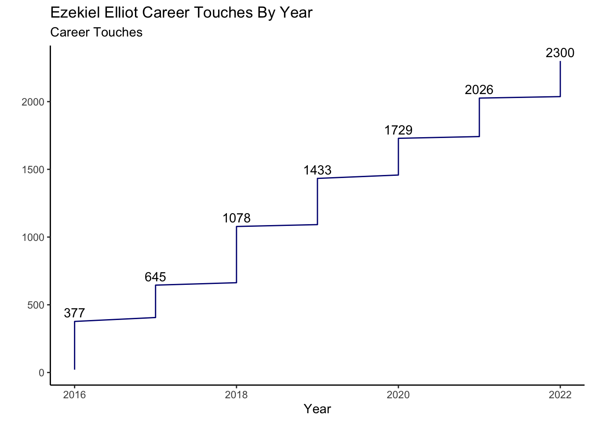
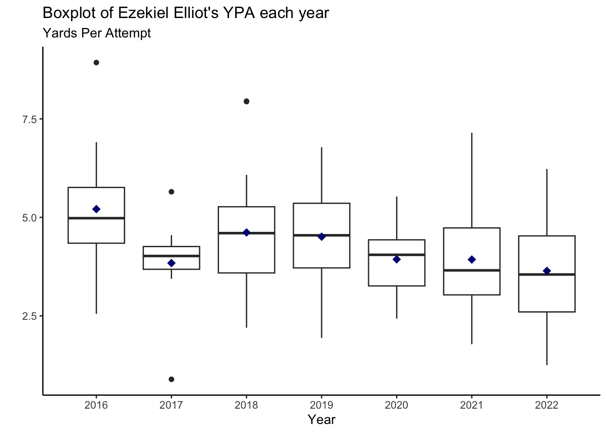
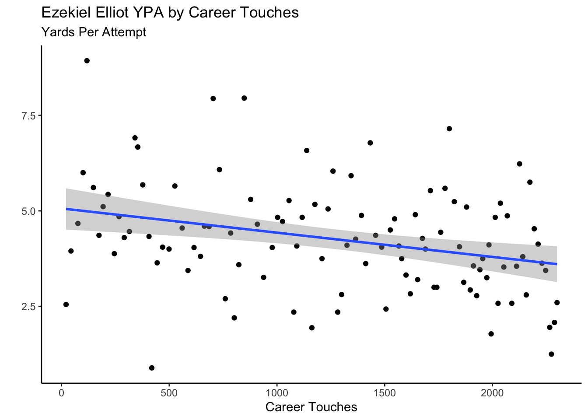

Code
knitr::include_graphics(path = "/Users/nicholaspatrick/Desktop/R For Fun/R for Fun/Cowboys/Zeke-picture.jpg")Both regular season and playoff data was obtained from Pro Football Refrence.
knitr::include_graphics(path = "/Users/nicholaspatrick/Desktop/R For Fun/R for Fun/Cowboys/Zeke-picture.jpg")Since his rookie year, it has been pretty clear that Ezekiel Elliot’s production has been on a decline. Specifically, his yards per carry have been consistently dropping since 2016. I want to investigate exactly how detrimental to his career it is to “feed Zeke”. Specifically, I wonder if I can quantify how many yards per carry he loses on each touch throughout his career.
I have two main goals in cleaning the data. First, I want to combine the regular season and playoff data, and sort the new dataset in chronological order. Next, I will create a running total of career rushing attemots, as well as receptions. Then, I will combine these two variables to create a running total of Ezekiel Elliots career touches.
zeke_reg_clean <- zeke_regular_season |>
select(Year, Date, `G#`, Week, Age, Opp, Result, Att...12, Yds...13, `Y/A...14`, Tgt, Rec, Yds...18) |>
rename(attempts = Att...12,
rush_yds = Yds...13,
YPA = `Y/A...14`,
rec_yds = Yds...18)
zeke_playoff_clean <- zeke_playoffs |>
select(Year, Date, `G#`, Week, Age, Opp, Result, Att, Yds...13, `Y/A`, Tgt, Rec, Yds...18) |>
rename(attempts = Att,
rush_yds = Yds...13,
YPA = `Y/A`,
rec_yds = Yds...18)
zeke_clean <- rbind(zeke_reg_clean, zeke_playoff_clean) |> # Merge regular season and playoff data
filter(!is.na(Age)) |>
slice_min(order_by = Age, n=109) |> #get data in chronological order
mutate(YPA = as.numeric(YPA),
attempts = as.numeric(attempts),
Rec = as.numeric(Rec),
ttl_att = cumsum(attempts),
ttl_rec = cumsum(Rec),
career_touches = ttl_att + ttl_rec) #create variables for total rush attempts, receptions, and touchesFirst, let’s take a look at Ezekiel Elliots touches over the course of his career thus far.
zeke_touches <- zeke_clean |>
group_by(Year) |>
summarize(touches = sum(attempts, Rec),
career_touches = max(career_touches))
zeke_touches |>
kbl(
col.names = c("Year", "Touches", "Career Touches"),
caption = "Zeke Elliot Touches By Year") |>
kable_classic_2(full_width = T, html_font = "Cambria",
lightable_options = "striped")| Year | Touches | Career Touches |
|---|---|---|
| 2016 | 377 | 377 |
| 2017 | 268 | 645 |
| 2018 | 433 | 1078 |
| 2019 | 355 | 1433 |
| 2020 | 296 | 1729 |
| 2021 | 297 | 2026 |
| 2022 | 274 | 2300 |
zeke_clean |>
mutate(lab = case_when(career_touches == 377 ~ "377",
career_touches == 645 ~ "645",
career_touches == 1078 ~ "1078",
career_touches == 1433 ~ "1433",
career_touches == 1729 ~ "1729",
career_touches == 2026 ~ "2026",
career_touches == 2300 ~ "2300",
TRUE ~ "")) |>
ggplot(aes(x=Year, y= career_touches, label = lab)) +
geom_line(color = "navy") +
labs(title = "Ezekiel Elliot Career Touches By Year",
y="",
subtitle = "Career Touches") +
theme_classic() +
geom_text(vjust = -.45)
avg_touches <- mean(zeke_touches$touches)
avg_touches[1] 328.5714As shown in both the table, as well as the graph above, Zeke’s career touches are gradually increasing by around 300 touches per year. He had an average of around 328.6 touches per year. Note that in 2017 he was suspended for 6 games which is why he had a career low of 268 touches, while being in the prime of his career. Elliot’s maximum amount of touches came in 2018, in which he had a total of 433 touches! It is also important to note that in the 2018 season, the Cowboys made it to the Divisional Round of the playoffs, so Elliot had 2 extra games. Now, let us take a look at Zeke’s yards per attempt over the course of his career.
zeke_ypa <- zeke_clean |>
group_by(Year) |>
summarise(avg_ypc = mean(YPA)) |>
mutate(avg_ypc = round(avg_ypc, 2))
zeke_ypa |>
kbl(col.names = c("Year", "Average Yards Per Carry"),
caption = "Zeke Elliot Yards Per Carry By Year") |>
kable_classic(full_width = T, html_font = "Cambria")| Year | Average Yards Per Carry |
|---|---|
| 2016 | 5.21 |
| 2017 | 3.84 |
| 2018 | 4.62 |
| 2019 | 4.51 |
| 2020 | 3.93 |
| 2021 | 3.93 |
| 2022 | 3.64 |
zeke_clean |>
mutate(Year = as.numeric(Year)) |>
ggplot(aes(x=Year, group=Year, y=YPA)) +
geom_boxplot() +
labs(title = "Boxplot of Ezekiel Elliot's YPA each year",
y="",
subtitle = "Yards Per Attempt") +
stat_summary(fun=mean, colour="navy", geom="point",
shape=18, size=3, show.legend=FALSE) +
theme_classic() +
scale_x_continuous(breaks = seq(2016,2022,1))
\[\widehat{YPC} = 5.06 + ((Career Touches)*(-0.000634))\]
zeke_clean |>
ggplot(aes(x=career_touches, y= YPA)) +
geom_point() +
geom_smooth(method = "lm") +
theme_classic() +
labs(title = "Ezekiel Elliot YPA by Career Touches",
subtitle = "Yards Per Attempt",
y="",
x= "Career Touches")
ypc_by_att = lm(YPA~career_touches,
data = zeke_clean)
tidy(ypc_by_att)
summary(ypc_by_att)
glance(ypc_by_att)According to the linear regression model fitting yards per attempt by career touches, over the course of Ezekiel Elliot’s career there was a fairly weak, negative correlation between touches and yards per attempt. The y-intercept of the model was 5.06, meaning that when Elliot was a rookie with 0 career touches, the model predicts he would have 5.06 yards per carry, on average. The slope of the model was -0.000634. This means that for every 1 touch over the course of his career, he lost 0.00634 yards per carry, on average. In other words, every 1000 touches over the course of his career took off 0.634 yards per carry. Currently, Ezekiel Elliot has 2300 career touches, and the model predicts in week 1 of next year he will average 3.6 yards per carry. Based on the \({R}^2\) value of 0.0928, we can say that 9.28% of the variation in Ezekiel Elliot’s yards per carry can be explained by the total amount of touches he has accumulated at that point of his career. This \({R}^2\) value is quite low, meaning that not very much variation in his yards per carry can be explained by total touches.